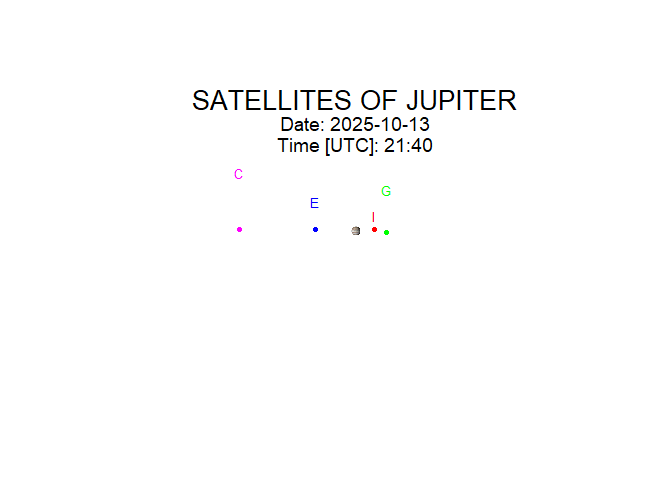
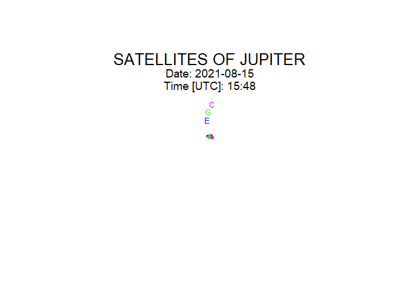
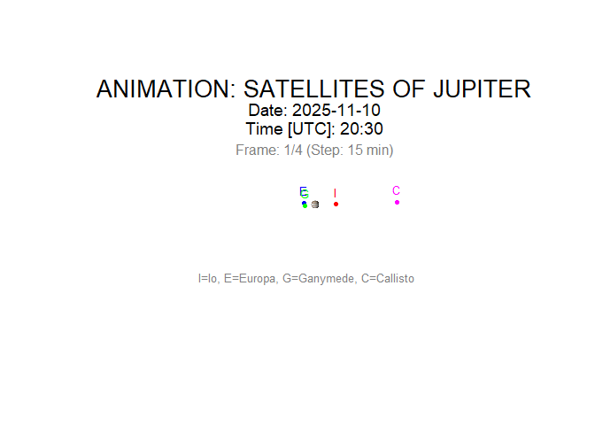
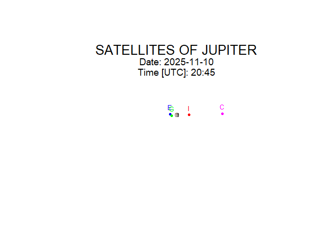
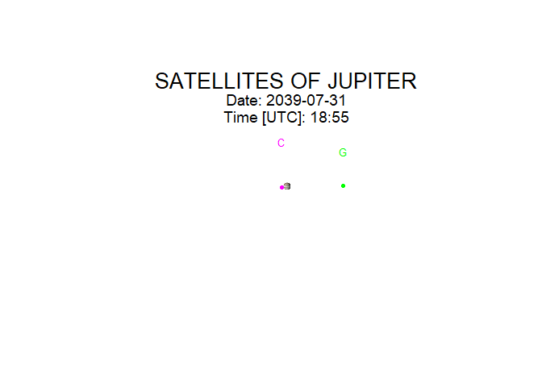
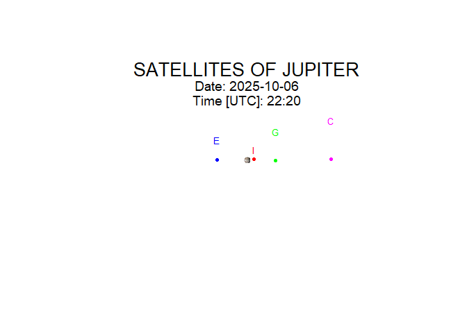
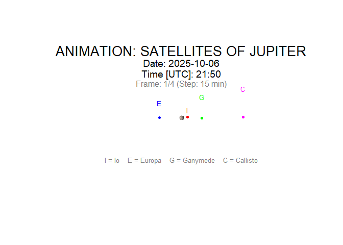
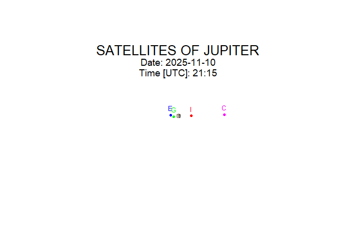
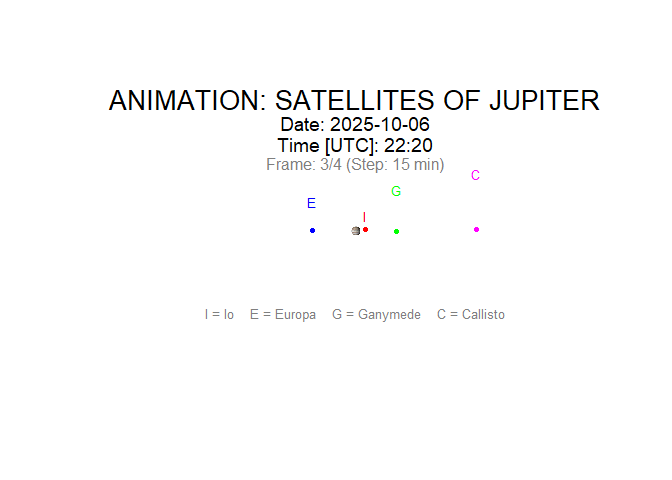

If you are looking at Jupiter through binoculars or a telescope and don’t know which moon is which, then use this package.
galisats is used to determine the positions of the four greatest satellites of Jupiter (called Galilean satellites). Positions are shown on the plot for any given time (UTC – Coordinated Universal Time) with respect to the planet, as seen from the Earth.
The galsat() function calculates numerical values of the satellites’ positions and draws them in rectangular coordinates:
x – the apparent rectangular coordinate of the satellite with respect to the center of Jupiter’s disk in the equatorial plane in the units of Jupiter’s equatorial radius; X is positive toward the west
y – the apparent rectangular coordinate of the satellite with respect to the center of Jupiter’s disk from the equatorial plane in the units of Jupiter’s equatorial radius; Y is positive toward the north
The function is based on algorithms in the book:
Astronomical Formulae for Calculators (4th edition), Jean Meeus, Willmann-Bell Inc., 1988
The galsat_animate() function creates an animation of the Galilean satellites’ positions. You provide the starting time, duration, the time step between frames, and the pause between frames.
The delta_t() function returns the value of delta-T in seconds unit. It’s useful for converting the Coordinated Universal Time (UTC) to the Ephemeris Time (ET). The conversion is handled as: ET = UTC + deltaT
Installation
You can install the development version of galisats from [GitHub] (https://github.com/) with:
# install.packages("devtools")
devtools::install_github("LechJaszowski/galilean_satellites")Examples
There are examples of using galsat(), galsat_animate() and delta_t() functions:

#> moon x y u_corrected
#> 1 Io 4.089507 0.1125276 136.36624
#> 2 Europa -8.417919 0.1080519 243.92834
#> 3 Ganymede 6.644450 -0.3518624 26.35374
#> 4 Callisto -24.735531 0.2536266 248.65218
galsat(2021, 8, 15, 15, 48)
#> moon x y u_corrected
#> 1 Io 0.9797847 0.07917838 170.411403
#> 2 Europa -0.7906981 -0.12661976 355.127268
#> 3 Ganymede -0.6605975 -0.20468771 357.477237
#> 4 Callisto 0.8873500 -0.36182567 1.917545
galsat(2032, 1, 5, 6, 44)
#> moon x y u_corrected
#> 1 Io 0.22409172 -0.1877863 177.8303
#> 2 Europa -8.19592931 -0.1487233 240.2495
#> 3 Ganymede 0.06620236 -0.4752985 179.7466
#> 4 Callisto -0.43339665 -0.8370223 180.9418
galsat(2033, 7, 28, 4, 50)
#> moon x y u_corrected
#> 1 Io 0.1130089 0.1120284 178.899094
#> 2 Europa 0.2794994 -0.1772460 1.720653
#> 3 Ganymede 0.8199864 -0.2855337 3.131382
#> 4 Callisto -0.4619301 0.4992523 181.009789
galsat(2039, 7, 31, 18, 55)
#> moon x y u_corrected
#> 1 Io 0.8650198 -0.0821923525 171.54352
#> 2 Europa 0.4450186 -0.1338542538 177.31099
#> 3 Ganymede 14.9887339 -0.0006076166 90.16442
#> 4 Callisto -1.1553599 -0.3741162112 182.49804
galsat_animate(2025, 10, 6, 21, 50, duration_hours = 1, time_step_minutes = 15)



